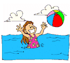
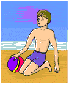
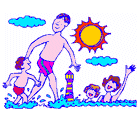

|  |  |
 The Periwinkle family likes to go to the beach whenever possible. Recently during Labor Day they left their house early to enjoy some fun in the sun. At 7:05, they were one-third of the way there. Then at 7:25 they had traveled three-fourths of their drive.What time did the family leave their house?
Extra: If the distance to the beach was 32 miles, what was their average rate or speed of their automobile?
| Comments? Send e-mail. | Back to top | Go back to Home Page | Go back to Contents |